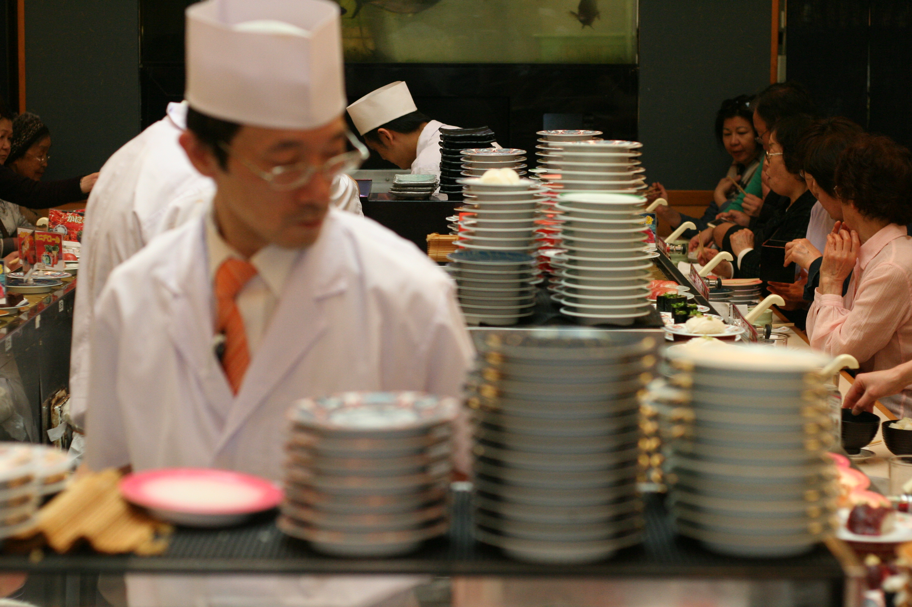
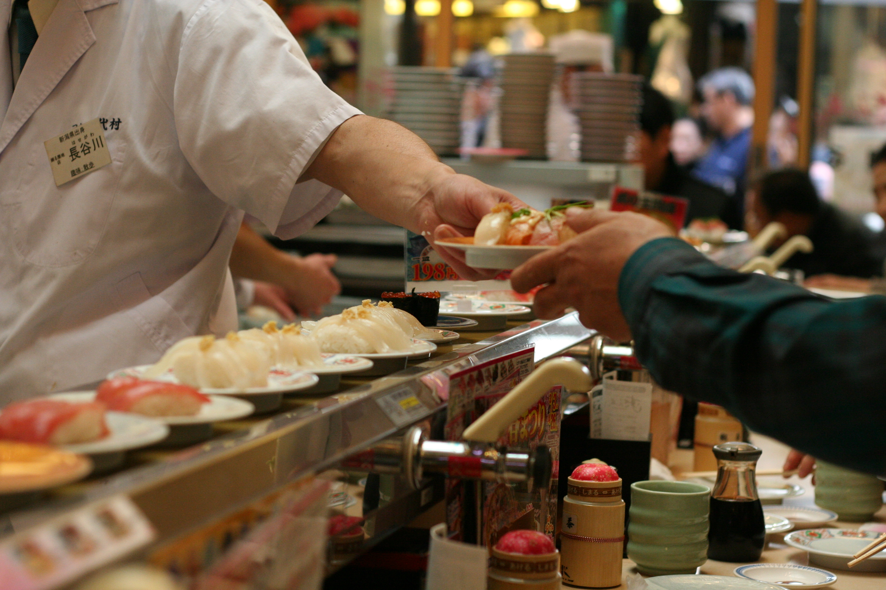

Kaiten/Conveyor-Belt Sushi in Japan
March 2015 | Posted: 6/10/15
When in Japan, eat lots of sushi. Kaiten (conveyor-belt) sushi is a trend that’s beginning to spread in the United States but it is extremely prevalent in Japan. If you’re not familiar with the concept, popular pre-made sushi plates are set on a conveyor belt that circle throughout the restaurant. As the plates make their way through the restaurant, customers pick and choose which dishes they want to eat. This idea was created by a sushi chef, Yoshiaki Shiraishi, who felt he couldn’t meet all the demand from his customers but also faced staffing issues for his restaurant. So, with a little bit of inspiration and entrepreneurship, a new method of serving sushi was born.

Traditionally, conveyor belt sushi restaurants tend are laid out so that the sushi chefs are in the middle and everyone has a seat facing the conveyor belt, as if they were in a bar. With this type of restaurant seating, you can truly admire the work these sushi chefs put out. These chefs are able to place dozens of plates of nigiri, maki, and sashimi on the conveyor belt in mere minutes.
If you don’t like any of the sushi that you see on the plate or you’re just craving a specific dish, have no fear! You can usually just order from the chef directly and he’ll make it on the spot.

Not all kaiten sushi restaurants are seated this way. Since traditional conveyor belt sushi places only allow you to talk to the people directly next to you (without being overly obnoxious), restaurants have adapted and many restaurants will have table booths next to the conveyor belt. In these restaurants, instead of seeing the sushi chefs directly, you’ll usually have to interact with a screen. No worries if you can’t read Japanese though, because there are always pictures.
Sometimes, with restaurants that use screens, you’ll have a chance to win a prize (like a bookmark or 5% off your entire meal) after ordering a certain amount of plates. For instance, you’ll be able to choose rock, paper, or scissors and rochambeau against the computer. Of course, I’m sure it’s rigged so you’ll lose the majority of the time but it’s still good fun.
One kaiten-sushi place that I really liked was called Uobei Sushi in Shibuya. At this particular restaurant, everyone would sit in front of their own screen and order whatever they want instead of sushi plates going around a conveyor belt. After ordering, your plate would shoot out of a conveyor belt and stop right in front of your seat. Uobei was cheap, delicious, and quick.